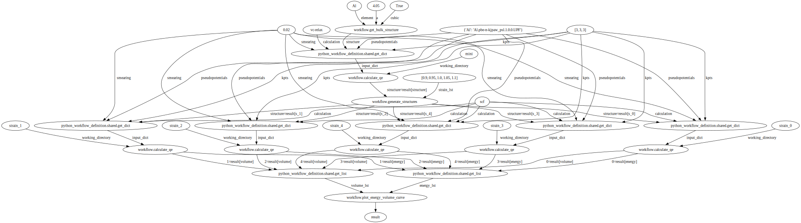
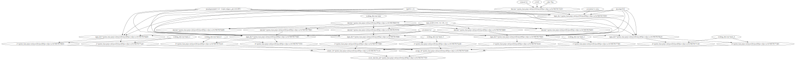

Load Quantum Espresso Energy Volume Curve Workflow#
Plot#
from python_workflow_definition.plot import plot
plot(file_name='workflow.json')

Aiida#
from python_workflow_definition.aiida import load_workflow_json
from aiida import load_profile
load_profile()
Profile<uuid='3ce302a995914d2e8a7b6327a10fe381' name='pwd'>
wg = load_workflow_json(file_name='workflow.json')
wg
wg.run()
05/24/2025 06:05:21 AM <10674> aiida.orm.nodes.process.workflow.workchain.WorkChainNode: [REPORT] [342|WorkGraphEngine|continue_workgraph]: tasks ready to run: get_bulk_structure1
05/24/2025 06:05:21 AM <10674> aiida.orm.nodes.process.workflow.workchain.WorkChainNode: [REPORT] [342|WorkGraphEngine|update_task_state]: Task: get_bulk_structure1, type: PyFunction, finished.
05/24/2025 06:05:21 AM <10674> aiida.orm.nodes.process.workflow.workchain.WorkChainNode: [REPORT] [342|WorkGraphEngine|continue_workgraph]: tasks ready to run: get_dict10
05/24/2025 06:05:22 AM <10674> aiida.orm.nodes.process.workflow.workchain.WorkChainNode: [REPORT] [342|WorkGraphEngine|update_task_state]: Task: get_dict10, type: PyFunction, finished.
05/24/2025 06:05:22 AM <10674> aiida.orm.nodes.process.workflow.workchain.WorkChainNode: [REPORT] [342|WorkGraphEngine|continue_workgraph]: tasks ready to run: calculate_qe2
[jupyter-pythonworkflow-fl--x---d7231032:10748] mca_base_component_repository_open: unable to open mca_btl_openib: librdmacm.so.1: cannot open shared object file: No such file or directory (ignored)
Note: The following floating-point exceptions are signalling: IEEE_INVALID_FLAG
05/24/2025 06:06:12 AM <10674> aiida.orm.nodes.process.calculation.calcfunction.CalcFunctionNode: [WARNING] Found extra results that are not included in the output: dict_keys(['energy', 'volume'])
05/24/2025 06:06:12 AM <10674> aiida.orm.nodes.process.workflow.workchain.WorkChainNode: [REPORT] [342|WorkGraphEngine|update_task_state]: Task: calculate_qe2, type: PyFunction, finished.
05/24/2025 06:06:12 AM <10674> aiida.orm.nodes.process.workflow.workchain.WorkChainNode: [REPORT] [342|WorkGraphEngine|continue_workgraph]: tasks ready to run: generate_structures3
05/24/2025 06:06:13 AM <10674> aiida.orm.nodes.process.workflow.workchain.WorkChainNode: [REPORT] [342|WorkGraphEngine|update_task_state]: Task: generate_structures3, type: PyFunction, finished.
05/24/2025 06:06:13 AM <10674> aiida.orm.nodes.process.workflow.workchain.WorkChainNode: [REPORT] [342|WorkGraphEngine|continue_workgraph]: tasks ready to run: get_dict11,get_dict12,get_dict13,get_dict14,get_dict15
05/24/2025 06:06:14 AM <10674> aiida.orm.nodes.process.workflow.workchain.WorkChainNode: [REPORT] [342|WorkGraphEngine|update_task_state]: Task: get_dict11, type: PyFunction, finished.
05/24/2025 06:06:14 AM <10674> aiida.orm.nodes.process.workflow.workchain.WorkChainNode: [REPORT] [342|WorkGraphEngine|continue_workgraph]: tasks ready to run: calculate_qe4,get_dict12,get_dict13,get_dict14,get_dict15
[jupyter-pythonworkflow-fl--x---d7231032:10760] mca_base_component_repository_open: unable to open mca_btl_openib: librdmacm.so.1: cannot open shared object file: No such file or directory (ignored)
Note: The following floating-point exceptions are signalling: IEEE_INVALID_FLAG
05/24/2025 06:06:24 AM <10674> aiida.orm.nodes.process.calculation.calcfunction.CalcFunctionNode: [WARNING] Found extra results that are not included in the output: dict_keys(['structure'])
05/24/2025 06:06:24 AM <10674> aiida.orm.nodes.process.workflow.workchain.WorkChainNode: [REPORT] [342|WorkGraphEngine|update_task_state]: Task: calculate_qe4, type: PyFunction, finished.
05/24/2025 06:06:24 AM <10674> aiida.orm.nodes.process.workflow.workchain.WorkChainNode: [REPORT] [342|WorkGraphEngine|continue_workgraph]: tasks ready to run: get_dict12,get_dict13,get_dict14,get_dict15
05/24/2025 06:06:25 AM <10674> aiida.orm.nodes.process.workflow.workchain.WorkChainNode: [REPORT] [342|WorkGraphEngine|update_task_state]: Task: get_dict12, type: PyFunction, finished.
05/24/2025 06:06:25 AM <10674> aiida.orm.nodes.process.workflow.workchain.WorkChainNode: [REPORT] [342|WorkGraphEngine|continue_workgraph]: tasks ready to run: calculate_qe5,get_dict13,get_dict14,get_dict15
[jupyter-pythonworkflow-fl--x---d7231032:10770] mca_base_component_repository_open: unable to open mca_btl_openib: librdmacm.so.1: cannot open shared object file: No such file or directory (ignored)
Note: The following floating-point exceptions are signalling: IEEE_INVALID_FLAG
05/24/2025 06:06:36 AM <10674> aiida.orm.nodes.process.calculation.calcfunction.CalcFunctionNode: [WARNING] Found extra results that are not included in the output: dict_keys(['structure'])
05/24/2025 06:06:36 AM <10674> aiida.orm.nodes.process.workflow.workchain.WorkChainNode: [REPORT] [342|WorkGraphEngine|update_task_state]: Task: calculate_qe5, type: PyFunction, finished.
05/24/2025 06:06:36 AM <10674> aiida.orm.nodes.process.workflow.workchain.WorkChainNode: [REPORT] [342|WorkGraphEngine|continue_workgraph]: tasks ready to run: get_dict13,get_dict14,get_dict15
05/24/2025 06:06:37 AM <10674> aiida.orm.nodes.process.workflow.workchain.WorkChainNode: [REPORT] [342|WorkGraphEngine|update_task_state]: Task: get_dict13, type: PyFunction, finished.
05/24/2025 06:06:37 AM <10674> aiida.orm.nodes.process.workflow.workchain.WorkChainNode: [REPORT] [342|WorkGraphEngine|continue_workgraph]: tasks ready to run: calculate_qe6,get_dict14,get_dict15
[jupyter-pythonworkflow-fl--x---d7231032:10781] mca_base_component_repository_open: unable to open mca_btl_openib: librdmacm.so.1: cannot open shared object file: No such file or directory (ignored)
Note: The following floating-point exceptions are signalling: IEEE_INVALID_FLAG
05/24/2025 06:06:49 AM <10674> aiida.orm.nodes.process.calculation.calcfunction.CalcFunctionNode: [WARNING] Found extra results that are not included in the output: dict_keys(['structure'])
05/24/2025 06:06:49 AM <10674> aiida.orm.nodes.process.workflow.workchain.WorkChainNode: [REPORT] [342|WorkGraphEngine|update_task_state]: Task: calculate_qe6, type: PyFunction, finished.
05/24/2025 06:06:49 AM <10674> aiida.orm.nodes.process.workflow.workchain.WorkChainNode: [REPORT] [342|WorkGraphEngine|continue_workgraph]: tasks ready to run: get_dict14,get_dict15
05/24/2025 06:06:50 AM <10674> aiida.orm.nodes.process.workflow.workchain.WorkChainNode: [REPORT] [342|WorkGraphEngine|update_task_state]: Task: get_dict14, type: PyFunction, finished.
05/24/2025 06:06:50 AM <10674> aiida.orm.nodes.process.workflow.workchain.WorkChainNode: [REPORT] [342|WorkGraphEngine|continue_workgraph]: tasks ready to run: calculate_qe7,get_dict15
[jupyter-pythonworkflow-fl--x---d7231032:10792] mca_base_component_repository_open: unable to open mca_btl_openib: librdmacm.so.1: cannot open shared object file: No such file or directory (ignored)
Note: The following floating-point exceptions are signalling: IEEE_INVALID_FLAG
05/24/2025 06:07:05 AM <10674> aiida.orm.nodes.process.calculation.calcfunction.CalcFunctionNode: [WARNING] Found extra results that are not included in the output: dict_keys(['structure'])
05/24/2025 06:07:06 AM <10674> aiida.orm.nodes.process.workflow.workchain.WorkChainNode: [REPORT] [342|WorkGraphEngine|update_task_state]: Task: calculate_qe7, type: PyFunction, finished.
05/24/2025 06:07:06 AM <10674> aiida.orm.nodes.process.workflow.workchain.WorkChainNode: [REPORT] [342|WorkGraphEngine|continue_workgraph]: tasks ready to run: get_dict15
05/24/2025 06:07:06 AM <10674> aiida.orm.nodes.process.workflow.workchain.WorkChainNode: [REPORT] [342|WorkGraphEngine|update_task_state]: Task: get_dict15, type: PyFunction, finished.
05/24/2025 06:07:06 AM <10674> aiida.orm.nodes.process.workflow.workchain.WorkChainNode: [REPORT] [342|WorkGraphEngine|continue_workgraph]: tasks ready to run: calculate_qe8
[jupyter-pythonworkflow-fl--x---d7231032:10804] mca_base_component_repository_open: unable to open mca_btl_openib: librdmacm.so.1: cannot open shared object file: No such file or directory (ignored)
Note: The following floating-point exceptions are signalling: IEEE_INVALID_FLAG
05/24/2025 06:07:21 AM <10674> aiida.orm.nodes.process.calculation.calcfunction.CalcFunctionNode: [WARNING] Found extra results that are not included in the output: dict_keys(['structure'])
05/24/2025 06:07:21 AM <10674> aiida.orm.nodes.process.workflow.workchain.WorkChainNode: [REPORT] [342|WorkGraphEngine|update_task_state]: Task: calculate_qe8, type: PyFunction, finished.
05/24/2025 06:07:21 AM <10674> aiida.orm.nodes.process.workflow.workchain.WorkChainNode: [REPORT] [342|WorkGraphEngine|continue_workgraph]: tasks ready to run: get_list16,get_list17
05/24/2025 06:07:22 AM <10674> aiida.orm.nodes.process.workflow.workchain.WorkChainNode: [REPORT] [342|WorkGraphEngine|update_task_state]: Task: get_list16, type: PyFunction, finished.
05/24/2025 06:07:22 AM <10674> aiida.orm.nodes.process.workflow.workchain.WorkChainNode: [REPORT] [342|WorkGraphEngine|continue_workgraph]: tasks ready to run: get_list17
05/24/2025 06:07:22 AM <10674> aiida.orm.nodes.process.workflow.workchain.WorkChainNode: [REPORT] [342|WorkGraphEngine|update_task_state]: Task: get_list17, type: PyFunction, finished.
05/24/2025 06:07:22 AM <10674> aiida.orm.nodes.process.workflow.workchain.WorkChainNode: [REPORT] [342|WorkGraphEngine|continue_workgraph]: tasks ready to run: plot_energy_volume_curve9
05/24/2025 06:07:23 AM <10674> aiida.orm.nodes.process.workflow.workchain.WorkChainNode: [REPORT] [342|WorkGraphEngine|update_task_state]: Task: plot_energy_volume_curve9, type: PyFunction, finished.
05/24/2025 06:07:23 AM <10674> aiida.orm.nodes.process.workflow.workchain.WorkChainNode: [REPORT] [342|WorkGraphEngine|continue_workgraph]: tasks ready to run:
05/24/2025 06:07:23 AM <10674> aiida.orm.nodes.process.workflow.workchain.WorkChainNode: [REPORT] [342|WorkGraphEngine|finalize]: Finalize workgraph.

executorlib#
from executorlib import SingleNodeExecutor
from python_workflow_definition.executorlib import load_workflow_json
with SingleNodeExecutor(max_workers=1) as exe:
result = load_workflow_json(file_name="workflow.json", exe=exe).result()
[jupyter-pythonworkflow-fl--x---d7231032:10932] mca_base_component_repository_open: unable to open mca_btl_openib: librdmacm.so.1: cannot open shared object file: No such file or directory (ignored)
Note: The following floating-point exceptions are signalling: IEEE_INVALID_FLAG
[jupyter-pythonworkflow-fl--x---d7231032:11164] mca_base_component_repository_open: unable to open mca_btl_openib: librdmacm.so.1: cannot open shared object file: No such file or directory (ignored)
Note: The following floating-point exceptions are signalling: IEEE_INVALID_FLAG
[jupyter-pythonworkflow-fl--x---d7231032:11230] mca_base_component_repository_open: unable to open mca_btl_openib: librdmacm.so.1: cannot open shared object file: No such file or directory (ignored)
Note: The following floating-point exceptions are signalling: IEEE_INVALID_FLAG
[jupyter-pythonworkflow-fl--x---d7231032:11301] mca_base_component_repository_open: unable to open mca_btl_openib: librdmacm.so.1: cannot open shared object file: No such file or directory (ignored)
Note: The following floating-point exceptions are signalling: IEEE_INVALID_FLAG
[jupyter-pythonworkflow-fl--x---d7231032:11367] mca_base_component_repository_open: unable to open mca_btl_openib: librdmacm.so.1: cannot open shared object file: No such file or directory (ignored)
Note: The following floating-point exceptions are signalling: IEEE_INVALID_FLAG
[jupyter-pythonworkflow-fl--x---d7231032:11433] mca_base_component_repository_open: unable to open mca_btl_openib: librdmacm.so.1: cannot open shared object file: No such file or directory (ignored)
Note: The following floating-point exceptions are signalling: IEEE_INVALID_FLAG
result
jobflow#
from jobflow.managers.local import run_locally
from python_workflow_definition.jobflow import load_workflow_json
flow = load_workflow_json(file_name="workflow.json")
result = run_locally(flow)
result
2025-05-24 06:11:19,085 INFO Started executing jobs locally
2025-05-24 06:11:19,088 INFO Starting job - get_bulk_structure (13fb19e6-ff0a-4b2e-9cdd-391f43580ede)
2025-05-24 06:11:19,091 INFO Finished job - get_bulk_structure (13fb19e6-ff0a-4b2e-9cdd-391f43580ede)
2025-05-24 06:11:19,091 INFO Starting job - get_dict (9d93f23c-2f31-4943-95eb-c30d527e0a7c)
2025-05-24 06:11:19,093 INFO Finished job - get_dict (9d93f23c-2f31-4943-95eb-c30d527e0a7c)
2025-05-24 06:11:19,093 INFO Starting job - calculate_qe (031ec4f2-37b7-4837-941d-943eb1a3a36f)
[jupyter-pythonworkflow-fl--x---d7231032:12088] mca_base_component_repository_open: unable to open mca_btl_openib: librdmacm.so.1: cannot open shared object file: No such file or directory (ignored)
2025-05-24 06:12:09,004 INFO Finished job - calculate_qe (031ec4f2-37b7-4837-941d-943eb1a3a36f)
2025-05-24 06:12:09,005 INFO Starting job - generate_structures (c26bc0f8-4833-4913-ae54-676004a2cee5)
2025-05-24 06:12:09,009 INFO Finished job - generate_structures (c26bc0f8-4833-4913-ae54-676004a2cee5)
2025-05-24 06:12:09,009 INFO Starting job - get_dict (d68d9722-53d8-489e-b3dd-831637c677ce)
2025-05-24 06:12:09,011 INFO Finished job - get_dict (d68d9722-53d8-489e-b3dd-831637c677ce)
2025-05-24 06:12:09,011 INFO Starting job - get_dict (a2a5e5ca-2862-48d4-a3d2-3090bc48ee44)
2025-05-24 06:12:09,013 INFO Finished job - get_dict (a2a5e5ca-2862-48d4-a3d2-3090bc48ee44)
2025-05-24 06:12:09,014 INFO Starting job - get_dict (752bccfa-8200-4fee-bcae-799506e75b3f)
2025-05-24 06:12:09,015 INFO Finished job - get_dict (752bccfa-8200-4fee-bcae-799506e75b3f)
2025-05-24 06:12:09,016 INFO Starting job - get_dict (8f26bac2-370b-431a-8e67-16205b118a8e)
2025-05-24 06:12:09,017 INFO Finished job - get_dict (8f26bac2-370b-431a-8e67-16205b118a8e)
2025-05-24 06:12:09,018 INFO Starting job - get_dict (86078da3-b1d1-47e5-98b6-666c8d1c925f)
2025-05-24 06:12:09,019 INFO Finished job - get_dict (86078da3-b1d1-47e5-98b6-666c8d1c925f)
2025-05-24 06:12:09,020 INFO Starting job - calculate_qe (8bf26748-191f-48c0-b55a-3c00dc23cbd4)
Note: The following floating-point exceptions are signalling: IEEE_INVALID_FLAG
[jupyter-pythonworkflow-fl--x---d7231032:12101] mca_base_component_repository_open: unable to open mca_btl_openib: librdmacm.so.1: cannot open shared object file: No such file or directory (ignored)
2025-05-24 06:12:19,833 INFO Finished job - calculate_qe (8bf26748-191f-48c0-b55a-3c00dc23cbd4)
2025-05-24 06:12:19,834 INFO Starting job - calculate_qe (e248cdb3-3984-4c9e-8ed9-2d8ea4d0053b)
Note: The following floating-point exceptions are signalling: IEEE_INVALID_FLAG
[jupyter-pythonworkflow-fl--x---d7231032:12111] mca_base_component_repository_open: unable to open mca_btl_openib: librdmacm.so.1: cannot open shared object file: No such file or directory (ignored)
Note: The following floating-point exceptions are signalling: IEEE_INVALID_FLAG
2025-05-24 06:12:30,295 INFO Finished job - calculate_qe (e248cdb3-3984-4c9e-8ed9-2d8ea4d0053b)
2025-05-24 06:12:30,296 INFO Starting job - calculate_qe (b99732df-2c29-471a-a9dd-b43cf0765295)
[jupyter-pythonworkflow-fl--x---d7231032:12121] mca_base_component_repository_open: unable to open mca_btl_openib: librdmacm.so.1: cannot open shared object file: No such file or directory (ignored)
2025-05-24 06:12:42,189 INFO Finished job - calculate_qe (b99732df-2c29-471a-a9dd-b43cf0765295)
2025-05-24 06:12:42,189 INFO Starting job - calculate_qe (5316d29c-cdf2-4a43-934d-02518422acf5)
Note: The following floating-point exceptions are signalling: IEEE_INVALID_FLAG
[jupyter-pythonworkflow-fl--x---d7231032:12131] mca_base_component_repository_open: unable to open mca_btl_openib: librdmacm.so.1: cannot open shared object file: No such file or directory (ignored)
2025-05-24 06:12:55,607 INFO Finished job - calculate_qe (5316d29c-cdf2-4a43-934d-02518422acf5)
2025-05-24 06:12:55,608 INFO Starting job - calculate_qe (dc161c3a-22d0-456d-9a79-bc0126f7296b)
Note: The following floating-point exceptions are signalling: IEEE_INVALID_FLAG
[jupyter-pythonworkflow-fl--x---d7231032:12141] mca_base_component_repository_open: unable to open mca_btl_openib: librdmacm.so.1: cannot open shared object file: No such file or directory (ignored)
2025-05-24 06:13:09,051 INFO Finished job - calculate_qe (dc161c3a-22d0-456d-9a79-bc0126f7296b)
2025-05-24 06:13:09,052 INFO Starting job - get_list (a23aaea4-d7dc-4223-bedc-213cbf38f436)
2025-05-24 06:13:09,054 INFO Finished job - get_list (a23aaea4-d7dc-4223-bedc-213cbf38f436)
2025-05-24 06:13:09,055 INFO Starting job - get_list (09e90050-8621-403e-8f78-c50a7180f23c)
2025-05-24 06:13:09,057 INFO Finished job - get_list (09e90050-8621-403e-8f78-c50a7180f23c)
2025-05-24 06:13:09,058 INFO Starting job - plot_energy_volume_curve (1e007ae5-e596-4e71-baa0-7ac7a604a5fd)
Note: The following floating-point exceptions are signalling: IEEE_INVALID_FLAG
2025-05-24 06:13:09,114 INFO Finished job - plot_energy_volume_curve (1e007ae5-e596-4e71-baa0-7ac7a604a5fd)
2025-05-24 06:13:09,115 INFO Finished executing jobs locally
{'13fb19e6-ff0a-4b2e-9cdd-391f43580ede': {1: Response(output='{"immutable_id": null, "last_modified": null, "elements": ["Al"], "nelements": 1, "elements_ratios": [1.0], "chemical_formula_descriptive": "Al4", "chemical_formula_reduced": "Al", "chemical_formula_hill": null, "chemical_formula_anonymous": "A", "dimension_types": [1, 1, 1], "nperiodic_dimensions": 3, "lattice_vectors": [[4.05, 0.0, 0.0], [0.0, 4.05, 0.0], [0.0, 0.0, 4.05]], "space_group_symmetry_operations_xyz": null, "space_group_symbol_hall": null, "space_group_symbol_hermann_mauguin": null, "space_group_symbol_hermann_mauguin_extended": null, "space_group_it_number": null, "cartesian_site_positions": [[0.0, 0.0, 0.0], [0.0, 2.025, 2.025], [2.025, 0.0, 2.025], [2.025, 2.025, 0.0]], "nsites": 4, "species": [{"name": "Al", "chemical_symbols": ["Al"], "concentration": [1.0], "mass": null, "original_name": null, "attached": null, "nattached": null}], "species_at_sites": ["Al", "Al", "Al", "Al"], "assemblies": null, "structure_features": []}', detour=None, addition=None, replace=None, stored_data=None, stop_children=False, stop_jobflow=False, job_dir=PosixPath('/home/jovyan/example_workflows/quantum_espresso'))},
'9d93f23c-2f31-4943-95eb-c30d527e0a7c': {1: Response(output={'structure': '{"immutable_id": null, "last_modified": null, "elements": ["Al"], "nelements": 1, "elements_ratios": [1.0], "chemical_formula_descriptive": "Al4", "chemical_formula_reduced": "Al", "chemical_formula_hill": null, "chemical_formula_anonymous": "A", "dimension_types": [1, 1, 1], "nperiodic_dimensions": 3, "lattice_vectors": [[4.05, 0.0, 0.0], [0.0, 4.05, 0.0], [0.0, 0.0, 4.05]], "space_group_symmetry_operations_xyz": null, "space_group_symbol_hall": null, "space_group_symbol_hermann_mauguin": null, "space_group_symbol_hermann_mauguin_extended": null, "space_group_it_number": null, "cartesian_site_positions": [[0.0, 0.0, 0.0], [0.0, 2.025, 2.025], [2.025, 0.0, 2.025], [2.025, 2.025, 0.0]], "nsites": 4, "species": [{"name": "Al", "chemical_symbols": ["Al"], "concentration": [1.0], "mass": null, "original_name": null, "attached": null, "nattached": null}], "species_at_sites": ["Al", "Al", "Al", "Al"], "assemblies": null, "structure_features": []}', 'pseudopotentials': {'Al': 'Al.pbe-n-kjpaw_psl.1.0.0.UPF'}, 'kpts': [3, 3, 3], 'calculation': 'vc-relax', 'smearing': 0.02}, detour=None, addition=None, replace=None, stored_data=None, stop_children=False, stop_jobflow=False, job_dir=PosixPath('/home/jovyan/example_workflows/quantum_espresso'))},
'031ec4f2-37b7-4837-941d-943eb1a3a36f': {1: Response(output={'structure': '{"immutable_id": null, "last_modified": null, "elements": ["Al"], "nelements": 1, "elements_ratios": [1.0], "chemical_formula_descriptive": "Al4", "chemical_formula_reduced": "Al", "chemical_formula_hill": null, "chemical_formula_anonymous": "A", "dimension_types": [1, 1, 1], "nperiodic_dimensions": 3, "lattice_vectors": [[4.045637215947026, 0.0, 0.0], [0.0, 4.045637215947026, 0.0], [0.0, 0.0, 4.045637215947025]], "space_group_symmetry_operations_xyz": null, "space_group_symbol_hall": null, "space_group_symbol_hermann_mauguin": null, "space_group_symbol_hermann_mauguin_extended": null, "space_group_it_number": null, "cartesian_site_positions": [[0.0, 0.0, 0.0], [0.0, 2.0228186079735124, 2.0228186079735124], [2.0228186079735124, 0.0, 2.0228186079735124], [2.0228186079735124, 2.0228186079735124, 0.0]], "nsites": 4, "species": [{"name": "Al", "chemical_symbols": ["Al"], "concentration": [1.0], "mass": null, "original_name": null, "attached": null, "nattached": null}], "species_at_sites": ["Al", "Al", "Al", "Al"], "assemblies": null, "structure_features": []}', 'energy': -1074.9365262253532, 'volume': 66.21567448237158}, detour=None, addition=None, replace=None, stored_data=None, stop_children=False, stop_jobflow=False, job_dir=PosixPath('/home/jovyan/example_workflows/quantum_espresso'))},
'c26bc0f8-4833-4913-ae54-676004a2cee5': {1: Response(output={'s_0': '{"immutable_id": null, "last_modified": null, "elements": ["Al"], "nelements": 1, "elements_ratios": [1.0], "chemical_formula_descriptive": "Al4", "chemical_formula_reduced": "Al", "chemical_formula_hill": null, "chemical_formula_anonymous": "A", "dimension_types": [1, 1, 1], "nperiodic_dimensions": 3, "lattice_vectors": [[3.906019785962327, 0.0, 0.0], [0.0, 3.906019785962327, 0.0], [0.0, 0.0, 3.906019785962326]], "space_group_symmetry_operations_xyz": null, "space_group_symbol_hall": null, "space_group_symbol_hermann_mauguin": null, "space_group_symbol_hermann_mauguin_extended": null, "space_group_it_number": null, "cartesian_site_positions": [[0.0, 0.0, 0.0], [0.0, 1.953009892981163, 1.9530098929811628], [1.953009892981163, 0.0, 1.9530098929811628], [1.953009892981163, 1.953009892981163, 0.0]], "nsites": 4, "species": [{"name": "Al", "chemical_symbols": ["Al"], "concentration": [1.0], "mass": null, "original_name": null, "attached": null, "nattached": null}], "species_at_sites": ["Al", "Al", "Al", "Al"], "assemblies": null, "structure_features": []}', 's_1': '{"immutable_id": null, "last_modified": null, "elements": ["Al"], "nelements": 1, "elements_ratios": [1.0], "chemical_formula_descriptive": "Al4", "chemical_formula_reduced": "Al", "chemical_formula_hill": null, "chemical_formula_anonymous": "A", "dimension_types": [1, 1, 1], "nperiodic_dimensions": 3, "lattice_vectors": [[3.9770538443182306, 0.0, 0.0], [0.0, 3.9770538443182306, 0.0], [0.0, 0.0, 3.9770538443182297]], "space_group_symmetry_operations_xyz": null, "space_group_symbol_hall": null, "space_group_symbol_hermann_mauguin": null, "space_group_symbol_hermann_mauguin_extended": null, "space_group_it_number": null, "cartesian_site_positions": [[0.0, 0.0, 0.0], [0.0, 1.9885269221591149, 1.9885269221591149], [1.9885269221591149, 0.0, 1.9885269221591149], [1.9885269221591149, 1.9885269221591149, 0.0]], "nsites": 4, "species": [{"name": "Al", "chemical_symbols": ["Al"], "concentration": [1.0], "mass": null, "original_name": null, "attached": null, "nattached": null}], "species_at_sites": ["Al", "Al", "Al", "Al"], "assemblies": null, "structure_features": []}', 's_2': '{"immutable_id": null, "last_modified": null, "elements": ["Al"], "nelements": 1, "elements_ratios": [1.0], "chemical_formula_descriptive": "Al4", "chemical_formula_reduced": "Al", "chemical_formula_hill": null, "chemical_formula_anonymous": "A", "dimension_types": [1, 1, 1], "nperiodic_dimensions": 3, "lattice_vectors": [[4.045637215947026, 0.0, 0.0], [0.0, 4.045637215947026, 0.0], [0.0, 0.0, 4.045637215947025]], "space_group_symmetry_operations_xyz": null, "space_group_symbol_hall": null, "space_group_symbol_hermann_mauguin": null, "space_group_symbol_hermann_mauguin_extended": null, "space_group_it_number": null, "cartesian_site_positions": [[0.0, 0.0, 0.0], [0.0, 2.0228186079735124, 2.0228186079735124], [2.0228186079735124, 0.0, 2.0228186079735124], [2.0228186079735124, 2.0228186079735124, 0.0]], "nsites": 4, "species": [{"name": "Al", "chemical_symbols": ["Al"], "concentration": [1.0], "mass": null, "original_name": null, "attached": null, "nattached": null}], "species_at_sites": ["Al", "Al", "Al", "Al"], "assemblies": null, "structure_features": []}', 's_3': '{"immutable_id": null, "last_modified": null, "elements": ["Al"], "nelements": 1, "elements_ratios": [1.0], "chemical_formula_descriptive": "Al4", "chemical_formula_reduced": "Al", "chemical_formula_hill": null, "chemical_formula_anonymous": "A", "dimension_types": [1, 1, 1], "nperiodic_dimensions": 3, "lattice_vectors": [[4.111970927283144, 0.0, 0.0], [0.0, 4.111970927283144, 0.0], [0.0, 0.0, 4.111970927283143]], "space_group_symmetry_operations_xyz": null, "space_group_symbol_hall": null, "space_group_symbol_hermann_mauguin": null, "space_group_symbol_hermann_mauguin_extended": null, "space_group_it_number": null, "cartesian_site_positions": [[0.0, 0.0, 0.0], [0.0, 2.0559854636415715, 2.0559854636415715], [2.0559854636415715, 0.0, 2.0559854636415715], [2.0559854636415715, 2.0559854636415715, 0.0]], "nsites": 4, "species": [{"name": "Al", "chemical_symbols": ["Al"], "concentration": [1.0], "mass": null, "original_name": null, "attached": null, "nattached": null}], "species_at_sites": ["Al", "Al", "Al", "Al"], "assemblies": null, "structure_features": []}', 's_4': '{"immutable_id": null, "last_modified": null, "elements": ["Al"], "nelements": 1, "elements_ratios": [1.0], "chemical_formula_descriptive": "Al4", "chemical_formula_reduced": "Al", "chemical_formula_hill": null, "chemical_formula_anonymous": "A", "dimension_types": [1, 1, 1], "nperiodic_dimensions": 3, "lattice_vectors": [[4.176230852372372, 0.0, 0.0], [0.0, 4.176230852372372, 0.0], [0.0, 0.0, 4.176230852372371]], "space_group_symmetry_operations_xyz": null, "space_group_symbol_hall": null, "space_group_symbol_hermann_mauguin": null, "space_group_symbol_hermann_mauguin_extended": null, "space_group_it_number": null, "cartesian_site_positions": [[0.0, 0.0, 0.0], [0.0, 2.0881154261861856, 2.0881154261861856], [2.0881154261861856, 0.0, 2.0881154261861856], [2.0881154261861856, 2.0881154261861856, 0.0]], "nsites": 4, "species": [{"name": "Al", "chemical_symbols": ["Al"], "concentration": [1.0], "mass": null, "original_name": null, "attached": null, "nattached": null}], "species_at_sites": ["Al", "Al", "Al", "Al"], "assemblies": null, "structure_features": []}'}, detour=None, addition=None, replace=None, stored_data=None, stop_children=False, stop_jobflow=False, job_dir=PosixPath('/home/jovyan/example_workflows/quantum_espresso'))},
'd68d9722-53d8-489e-b3dd-831637c677ce': {1: Response(output={'structure': '{"immutable_id": null, "last_modified": null, "elements": ["Al"], "nelements": 1, "elements_ratios": [1.0], "chemical_formula_descriptive": "Al4", "chemical_formula_reduced": "Al", "chemical_formula_hill": null, "chemical_formula_anonymous": "A", "dimension_types": [1, 1, 1], "nperiodic_dimensions": 3, "lattice_vectors": [[3.906019785962327, 0.0, 0.0], [0.0, 3.906019785962327, 0.0], [0.0, 0.0, 3.906019785962326]], "space_group_symmetry_operations_xyz": null, "space_group_symbol_hall": null, "space_group_symbol_hermann_mauguin": null, "space_group_symbol_hermann_mauguin_extended": null, "space_group_it_number": null, "cartesian_site_positions": [[0.0, 0.0, 0.0], [0.0, 1.953009892981163, 1.9530098929811628], [1.953009892981163, 0.0, 1.9530098929811628], [1.953009892981163, 1.953009892981163, 0.0]], "nsites": 4, "species": [{"name": "Al", "chemical_symbols": ["Al"], "concentration": [1.0], "mass": null, "original_name": null, "attached": null, "nattached": null}], "species_at_sites": ["Al", "Al", "Al", "Al"], "assemblies": null, "structure_features": []}', 'pseudopotentials': {'Al': 'Al.pbe-n-kjpaw_psl.1.0.0.UPF'}, 'kpts': [3, 3, 3], 'calculation': 'scf', 'smearing': 0.02}, detour=None, addition=None, replace=None, stored_data=None, stop_children=False, stop_jobflow=False, job_dir=PosixPath('/home/jovyan/example_workflows/quantum_espresso'))},
'a2a5e5ca-2862-48d4-a3d2-3090bc48ee44': {1: Response(output={'structure': '{"immutable_id": null, "last_modified": null, "elements": ["Al"], "nelements": 1, "elements_ratios": [1.0], "chemical_formula_descriptive": "Al4", "chemical_formula_reduced": "Al", "chemical_formula_hill": null, "chemical_formula_anonymous": "A", "dimension_types": [1, 1, 1], "nperiodic_dimensions": 3, "lattice_vectors": [[3.9770538443182306, 0.0, 0.0], [0.0, 3.9770538443182306, 0.0], [0.0, 0.0, 3.9770538443182297]], "space_group_symmetry_operations_xyz": null, "space_group_symbol_hall": null, "space_group_symbol_hermann_mauguin": null, "space_group_symbol_hermann_mauguin_extended": null, "space_group_it_number": null, "cartesian_site_positions": [[0.0, 0.0, 0.0], [0.0, 1.9885269221591149, 1.9885269221591149], [1.9885269221591149, 0.0, 1.9885269221591149], [1.9885269221591149, 1.9885269221591149, 0.0]], "nsites": 4, "species": [{"name": "Al", "chemical_symbols": ["Al"], "concentration": [1.0], "mass": null, "original_name": null, "attached": null, "nattached": null}], "species_at_sites": ["Al", "Al", "Al", "Al"], "assemblies": null, "structure_features": []}', 'pseudopotentials': {'Al': 'Al.pbe-n-kjpaw_psl.1.0.0.UPF'}, 'kpts': [3, 3, 3], 'calculation': 'scf', 'smearing': 0.02}, detour=None, addition=None, replace=None, stored_data=None, stop_children=False, stop_jobflow=False, job_dir=PosixPath('/home/jovyan/example_workflows/quantum_espresso'))},
'752bccfa-8200-4fee-bcae-799506e75b3f': {1: Response(output={'structure': '{"immutable_id": null, "last_modified": null, "elements": ["Al"], "nelements": 1, "elements_ratios": [1.0], "chemical_formula_descriptive": "Al4", "chemical_formula_reduced": "Al", "chemical_formula_hill": null, "chemical_formula_anonymous": "A", "dimension_types": [1, 1, 1], "nperiodic_dimensions": 3, "lattice_vectors": [[4.045637215947026, 0.0, 0.0], [0.0, 4.045637215947026, 0.0], [0.0, 0.0, 4.045637215947025]], "space_group_symmetry_operations_xyz": null, "space_group_symbol_hall": null, "space_group_symbol_hermann_mauguin": null, "space_group_symbol_hermann_mauguin_extended": null, "space_group_it_number": null, "cartesian_site_positions": [[0.0, 0.0, 0.0], [0.0, 2.0228186079735124, 2.0228186079735124], [2.0228186079735124, 0.0, 2.0228186079735124], [2.0228186079735124, 2.0228186079735124, 0.0]], "nsites": 4, "species": [{"name": "Al", "chemical_symbols": ["Al"], "concentration": [1.0], "mass": null, "original_name": null, "attached": null, "nattached": null}], "species_at_sites": ["Al", "Al", "Al", "Al"], "assemblies": null, "structure_features": []}', 'pseudopotentials': {'Al': 'Al.pbe-n-kjpaw_psl.1.0.0.UPF'}, 'kpts': [3, 3, 3], 'calculation': 'scf', 'smearing': 0.02}, detour=None, addition=None, replace=None, stored_data=None, stop_children=False, stop_jobflow=False, job_dir=PosixPath('/home/jovyan/example_workflows/quantum_espresso'))},
'8f26bac2-370b-431a-8e67-16205b118a8e': {1: Response(output={'structure': '{"immutable_id": null, "last_modified": null, "elements": ["Al"], "nelements": 1, "elements_ratios": [1.0], "chemical_formula_descriptive": "Al4", "chemical_formula_reduced": "Al", "chemical_formula_hill": null, "chemical_formula_anonymous": "A", "dimension_types": [1, 1, 1], "nperiodic_dimensions": 3, "lattice_vectors": [[4.111970927283144, 0.0, 0.0], [0.0, 4.111970927283144, 0.0], [0.0, 0.0, 4.111970927283143]], "space_group_symmetry_operations_xyz": null, "space_group_symbol_hall": null, "space_group_symbol_hermann_mauguin": null, "space_group_symbol_hermann_mauguin_extended": null, "space_group_it_number": null, "cartesian_site_positions": [[0.0, 0.0, 0.0], [0.0, 2.0559854636415715, 2.0559854636415715], [2.0559854636415715, 0.0, 2.0559854636415715], [2.0559854636415715, 2.0559854636415715, 0.0]], "nsites": 4, "species": [{"name": "Al", "chemical_symbols": ["Al"], "concentration": [1.0], "mass": null, "original_name": null, "attached": null, "nattached": null}], "species_at_sites": ["Al", "Al", "Al", "Al"], "assemblies": null, "structure_features": []}', 'pseudopotentials': {'Al': 'Al.pbe-n-kjpaw_psl.1.0.0.UPF'}, 'kpts': [3, 3, 3], 'calculation': 'scf', 'smearing': 0.02}, detour=None, addition=None, replace=None, stored_data=None, stop_children=False, stop_jobflow=False, job_dir=PosixPath('/home/jovyan/example_workflows/quantum_espresso'))},
'86078da3-b1d1-47e5-98b6-666c8d1c925f': {1: Response(output={'structure': '{"immutable_id": null, "last_modified": null, "elements": ["Al"], "nelements": 1, "elements_ratios": [1.0], "chemical_formula_descriptive": "Al4", "chemical_formula_reduced": "Al", "chemical_formula_hill": null, "chemical_formula_anonymous": "A", "dimension_types": [1, 1, 1], "nperiodic_dimensions": 3, "lattice_vectors": [[4.176230852372372, 0.0, 0.0], [0.0, 4.176230852372372, 0.0], [0.0, 0.0, 4.176230852372371]], "space_group_symmetry_operations_xyz": null, "space_group_symbol_hall": null, "space_group_symbol_hermann_mauguin": null, "space_group_symbol_hermann_mauguin_extended": null, "space_group_it_number": null, "cartesian_site_positions": [[0.0, 0.0, 0.0], [0.0, 2.0881154261861856, 2.0881154261861856], [2.0881154261861856, 0.0, 2.0881154261861856], [2.0881154261861856, 2.0881154261861856, 0.0]], "nsites": 4, "species": [{"name": "Al", "chemical_symbols": ["Al"], "concentration": [1.0], "mass": null, "original_name": null, "attached": null, "nattached": null}], "species_at_sites": ["Al", "Al", "Al", "Al"], "assemblies": null, "structure_features": []}', 'pseudopotentials': {'Al': 'Al.pbe-n-kjpaw_psl.1.0.0.UPF'}, 'kpts': [3, 3, 3], 'calculation': 'scf', 'smearing': 0.02}, detour=None, addition=None, replace=None, stored_data=None, stop_children=False, stop_jobflow=False, job_dir=PosixPath('/home/jovyan/example_workflows/quantum_espresso'))},
'8bf26748-191f-48c0-b55a-3c00dc23cbd4': {1: Response(output={'structure': '{"immutable_id": null, "last_modified": null, "elements": ["Al"], "nelements": 1, "elements_ratios": [1.0], "chemical_formula_descriptive": "Al4", "chemical_formula_reduced": "Al", "chemical_formula_hill": null, "chemical_formula_anonymous": "A", "dimension_types": [1, 1, 1], "nperiodic_dimensions": 3, "lattice_vectors": [[3.906019768889365, 0.0, 0.0], [0.0, 3.906019768889365, 0.0], [0.0, 0.0, 3.906019768889365]], "space_group_symmetry_operations_xyz": null, "space_group_symbol_hall": null, "space_group_symbol_hermann_mauguin": null, "space_group_symbol_hermann_mauguin_extended": null, "space_group_it_number": null, "cartesian_site_positions": [[0.0, 0.0, 0.0], [0.0, 1.9530098844635175, 1.9530098844635175], [1.9530098844635175, 0.0, 1.9530098844635175], [1.9530098844635175, 1.9530098844635175, 0.0]], "nsites": 4, "species": [{"name": "Al", "chemical_symbols": ["Al"], "concentration": [1.0], "mass": null, "original_name": null, "attached": null, "nattached": null}], "species_at_sites": ["Al", "Al", "Al", "Al"], "assemblies": null, "structure_features": []}', 'energy': -1074.8457446150635, 'volume': 59.594106252688384}, detour=None, addition=None, replace=None, stored_data=None, stop_children=False, stop_jobflow=False, job_dir=PosixPath('/home/jovyan/example_workflows/quantum_espresso'))},
'e248cdb3-3984-4c9e-8ed9-2d8ea4d0053b': {1: Response(output={'structure': '{"immutable_id": null, "last_modified": null, "elements": ["Al"], "nelements": 1, "elements_ratios": [1.0], "chemical_formula_descriptive": "Al4", "chemical_formula_reduced": "Al", "chemical_formula_hill": null, "chemical_formula_anonymous": "A", "dimension_types": [1, 1, 1], "nperiodic_dimensions": 3, "lattice_vectors": [[3.97705382693478, 0.0, 0.0], [0.0, 3.97705382693478, 0.0], [0.0, 0.0, 3.97705382693478]], "space_group_symmetry_operations_xyz": null, "space_group_symbol_hall": null, "space_group_symbol_hermann_mauguin": null, "space_group_symbol_hermann_mauguin_extended": null, "space_group_it_number": null, "cartesian_site_positions": [[0.0, 0.0, 0.0], [0.0, 1.9885269135082746, 1.9885269135082746], [1.9885269135082746, 0.0, 1.9885269135082746], [1.9885269135082746, 1.9885269135082746, 0.0]], "nsites": 4, "species": [{"name": "Al", "chemical_symbols": ["Al"], "concentration": [1.0], "mass": null, "original_name": null, "attached": null, "nattached": null}], "species_at_sites": ["Al", "Al", "Al", "Al"], "assemblies": null, "structure_features": []}', 'energy': -1074.916148859456, 'volume': 62.90488993339307}, detour=None, addition=None, replace=None, stored_data=None, stop_children=False, stop_jobflow=False, job_dir=PosixPath('/home/jovyan/example_workflows/quantum_espresso'))},
'b99732df-2c29-471a-a9dd-b43cf0765295': {1: Response(output={'structure': '{"immutable_id": null, "last_modified": null, "elements": ["Al"], "nelements": 1, "elements_ratios": [1.0], "chemical_formula_descriptive": "Al4", "chemical_formula_reduced": "Al", "chemical_formula_hill": null, "chemical_formula_anonymous": "A", "dimension_types": [1, 1, 1], "nperiodic_dimensions": 3, "lattice_vectors": [[4.045637198263806, 0.0, 0.0], [0.0, 4.045637198263806, 0.0], [0.0, 0.0, 4.045637198263797]], "space_group_symmetry_operations_xyz": null, "space_group_symbol_hall": null, "space_group_symbol_hermann_mauguin": null, "space_group_symbol_hermann_mauguin_extended": null, "space_group_it_number": null, "cartesian_site_positions": [[0.0, 0.0, 0.0], [0.0, 2.0228185991583887, 2.0228185991583887], [2.0228185991583887, 0.0, 2.0228185991583887], [2.0228185991583887, 2.0228185991583887, 0.0]], "nsites": 4, "species": [{"name": "Al", "chemical_symbols": ["Al"], "concentration": [1.0], "mass": null, "original_name": null, "attached": null, "nattached": null}], "species_at_sites": ["Al", "Al", "Al", "Al"], "assemblies": null, "structure_features": []}', 'energy': -1074.9365241668336, 'volume': 66.21567361409807}, detour=None, addition=None, replace=None, stored_data=None, stop_children=False, stop_jobflow=False, job_dir=PosixPath('/home/jovyan/example_workflows/quantum_espresso'))},
'5316d29c-cdf2-4a43-934d-02518422acf5': {1: Response(output={'structure': '{"immutable_id": null, "last_modified": null, "elements": ["Al"], "nelements": 1, "elements_ratios": [1.0], "chemical_formula_descriptive": "Al4", "chemical_formula_reduced": "Al", "chemical_formula_hill": null, "chemical_formula_anonymous": "A", "dimension_types": [1, 1, 1], "nperiodic_dimensions": 3, "lattice_vectors": [[4.111970909309976, 0.0, 0.0], [0.0, 4.111970909309976, 0.0], [0.0, 0.0, 4.111970909309976]], "space_group_symmetry_operations_xyz": null, "space_group_symbol_hall": null, "space_group_symbol_hermann_mauguin": null, "space_group_symbol_hermann_mauguin_extended": null, "space_group_it_number": null, "cartesian_site_positions": [[0.0, 0.0, 0.0], [0.0, 2.0559854546134178, 2.0559854546134178], [2.0559854546134178, 0.0, 2.0559854546134178], [2.0559854546134178, 2.0559854546134178, 0.0]], "nsites": 4, "species": [{"name": "Al", "chemical_symbols": ["Al"], "concentration": [1.0], "mass": null, "original_name": null, "attached": null, "nattached": null}], "species_at_sites": ["Al", "Al", "Al", "Al"], "assemblies": null, "structure_features": []}', 'energy': -1074.9192860025798, 'volume': 69.52645729480278}, detour=None, addition=None, replace=None, stored_data=None, stop_children=False, stop_jobflow=False, job_dir=PosixPath('/home/jovyan/example_workflows/quantum_espresso'))},
'dc161c3a-22d0-456d-9a79-bc0126f7296b': {1: Response(output={'structure': '{"immutable_id": null, "last_modified": null, "elements": ["Al"], "nelements": 1, "elements_ratios": [1.0], "chemical_formula_descriptive": "Al4", "chemical_formula_reduced": "Al", "chemical_formula_hill": null, "chemical_formula_anonymous": "A", "dimension_types": [1, 1, 1], "nperiodic_dimensions": 3, "lattice_vectors": [[4.17623083411833, 0.0, 0.0], [0.0, 4.17623083411833, 0.0], [0.0, 0.0, 4.17623083411833]], "space_group_symmetry_operations_xyz": null, "space_group_symbol_hall": null, "space_group_symbol_hermann_mauguin": null, "space_group_symbol_hermann_mauguin_extended": null, "space_group_it_number": null, "cartesian_site_positions": [[0.0, 0.0, 0.0], [0.0, 2.08811541707298, 2.08811541707298], [2.08811541707298, 0.0, 2.08811541707298], [2.08811541707298, 2.08811541707298, 0.0]], "nsites": 4, "species": [{"name": "Al", "chemical_symbols": ["Al"], "concentration": [1.0], "mass": null, "original_name": null, "attached": null, "nattached": null}], "species_at_sites": ["Al", "Al", "Al", "Al"], "assemblies": null, "structure_features": []}', 'energy': -1074.8737904693403, 'volume': 72.8372409755078}, detour=None, addition=None, replace=None, stored_data=None, stop_children=False, stop_jobflow=False, job_dir=PosixPath('/home/jovyan/example_workflows/quantum_espresso'))},
'a23aaea4-d7dc-4223-bedc-213cbf38f436': {1: Response(output=[59.594106252688384, 62.90488993339307, 66.21567361409807, 69.52645729480278, 72.8372409755078], detour=None, addition=None, replace=None, stored_data=None, stop_children=False, stop_jobflow=False, job_dir=PosixPath('/home/jovyan/example_workflows/quantum_espresso'))},
'09e90050-8621-403e-8f78-c50a7180f23c': {1: Response(output=[-1074.8457446150635, -1074.916148859456, -1074.9365241668336, -1074.9192860025798, -1074.8737904693403], detour=None, addition=None, replace=None, stored_data=None, stop_children=False, stop_jobflow=False, job_dir=PosixPath('/home/jovyan/example_workflows/quantum_espresso'))},
'1e007ae5-e596-4e71-baa0-7ac7a604a5fd': {1: Response(output=None, detour=None, addition=None, replace=None, stored_data=None, stop_children=False, stop_jobflow=False, job_dir=PosixPath('/home/jovyan/example_workflows/quantum_espresso'))}}
pyiron_base#
from python_workflow_definition.pyiron_base import load_workflow_json
delayed_object_lst = load_workflow_json(file_name="workflow.json")
delayed_object_lst[-1].draw()

delayed_object_lst[-1].pull()
The job get_bulk_structure_2ca4aeae204ceaa28593c93054b07908 was saved and received the ID: 1
The job get_dict_1e47509b88d63a21fd421686554c8f4a was saved and received the ID: 2
The job calculate_qe_411e578f2700d09ba2df9a4c682b4582 was saved and received the ID: 3
[jupyter-pythonworkflow-fl--x---d7231032:12175] mca_base_component_repository_open: unable to open mca_btl_openib: librdmacm.so.1: cannot open shared object file: No such file or directory (ignored)
Note: The following floating-point exceptions are signalling: IEEE_INVALID_FLAG
The job generate_structures_29f44e1952b8f5678d84a2b016899fce was saved and received the ID: 4
The job get_dict_ef87933d61756398c7394b1132327107 was saved and received the ID: 5
The job calculate_qe_7a90048d1de9ecbd9a0d65912ce16a05 was saved and received the ID: 6
[jupyter-pythonworkflow-fl--x---d7231032:12194] mca_base_component_repository_open: unable to open mca_btl_openib: librdmacm.so.1: cannot open shared object file: No such file or directory (ignored)
Note: The following floating-point exceptions are signalling: IEEE_INVALID_FLAG
The job get_dict_8df97e882e2a6b51191dddf174e87731 was saved and received the ID: 7
The job calculate_qe_78019c29f3a9ab2782b972a871cf7b97 was saved and received the ID: 8
[jupyter-pythonworkflow-fl--x---d7231032:12205] mca_base_component_repository_open: unable to open mca_btl_openib: librdmacm.so.1: cannot open shared object file: No such file or directory (ignored)
Note: The following floating-point exceptions are signalling: IEEE_INVALID_FLAG
The job get_dict_be1c027670e9498836f67834851d04cc was saved and received the ID: 9
The job calculate_qe_aaa66ba36e55a9cc577037576b1e6ccb was saved and received the ID: 10
[jupyter-pythonworkflow-fl--x---d7231032:12216] mca_base_component_repository_open: unable to open mca_btl_openib: librdmacm.so.1: cannot open shared object file: No such file or directory (ignored)
Note: The following floating-point exceptions are signalling: IEEE_INVALID_FLAG
The job get_dict_52b5c75d597a1c4b528615e1125a0896 was saved and received the ID: 11
The job calculate_qe_62d76f231acf9ea944e9c695277ff831 was saved and received the ID: 12
[jupyter-pythonworkflow-fl--x---d7231032:12227] mca_base_component_repository_open: unable to open mca_btl_openib: librdmacm.so.1: cannot open shared object file: No such file or directory (ignored)
Note: The following floating-point exceptions are signalling: IEEE_INVALID_FLAG
The job get_dict_1c3ed4191b35cf54ac773bb8172f6947 was saved and received the ID: 13
The job calculate_qe_2589d637ad774f38e26fdd2b4529fcca was saved and received the ID: 14
[jupyter-pythonworkflow-fl--x---d7231032:12237] mca_base_component_repository_open: unable to open mca_btl_openib: librdmacm.so.1: cannot open shared object file: No such file or directory (ignored)
Note: The following floating-point exceptions are signalling: IEEE_INVALID_FLAG
The job get_list_274bff6e81bec86553cdd07a055e2b5e was saved and received the ID: 15
The job get_list_4457d79d3504f678b6f74963dd8f0e4c was saved and received the ID: 16
The job plot_energy_volume_curve_33e1f4fbca145ac4d2a72d20544cad9d was saved and received the ID: 17
Load Workflow with pyiron_workflow#
from python_workflow_definition.pyiron_workflow import load_workflow_json
wf = load_workflow_json(file_name="workflow.json")
wf.draw(size=(10,10))
wf.run()
Python#
from python_workflow_definition.purepython import load_workflow_json
load_workflow_json(file_name="workflow.json")
[jupyter-pythonworkflow-fl--x---d7231032:12248] mca_base_component_repository_open: unable to open mca_btl_openib: librdmacm.so.1: cannot open shared object file: No such file or directory (ignored)
Note: The following floating-point exceptions are signalling: IEEE_INVALID_FLAG
[jupyter-pythonworkflow-fl--x---d7231032:12262] mca_base_component_repository_open: unable to open mca_btl_openib: librdmacm.so.1: cannot open shared object file: No such file or directory (ignored)
Note: The following floating-point exceptions are signalling: IEEE_INVALID_FLAG
[jupyter-pythonworkflow-fl--x---d7231032:12277] mca_base_component_repository_open: unable to open mca_btl_openib: librdmacm.so.1: cannot open shared object file: No such file or directory (ignored)
Note: The following floating-point exceptions are signalling: IEEE_INVALID_FLAG
[jupyter-pythonworkflow-fl--x---d7231032:12289] mca_base_component_repository_open: unable to open mca_btl_openib: librdmacm.so.1: cannot open shared object file: No such file or directory (ignored)
Note: The following floating-point exceptions are signalling: IEEE_INVALID_FLAG
[jupyter-pythonworkflow-fl--x---d7231032:12299] mca_base_component_repository_open: unable to open mca_btl_openib: librdmacm.so.1: cannot open shared object file: No such file or directory (ignored)
Note: The following floating-point exceptions are signalling: IEEE_INVALID_FLAG
[jupyter-pythonworkflow-fl--x---d7231032:12309] mca_base_component_repository_open: unable to open mca_btl_openib: librdmacm.so.1: cannot open shared object file: No such file or directory (ignored)
Note: The following floating-point exceptions are signalling: IEEE_INVALID_FLAG